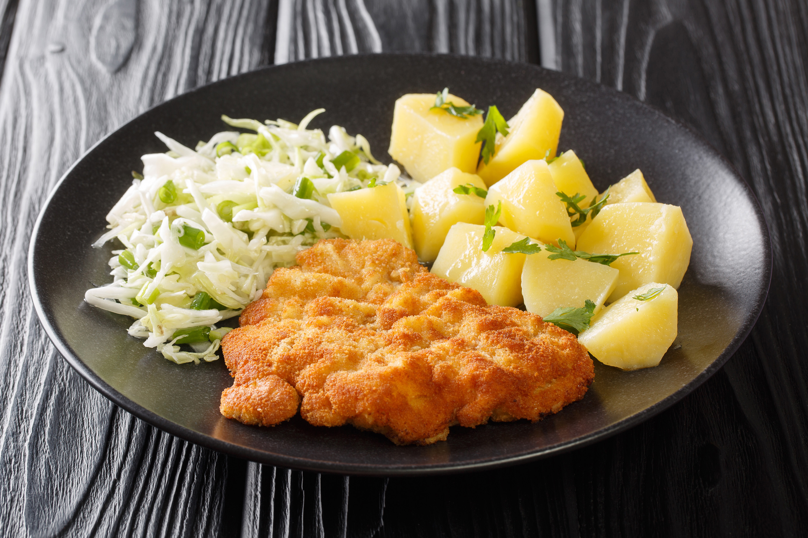

Kotlet schabowy

What are kotlet schabowy?
Breaded pork chops with mashed potatoes and salad (preferably a sauerkraut salad)
is served regularly for Sunday dinner in Poland.
Ingredients
- 2 boneless pork chops
- salt and freshly ground black pepper to taste
- 1 tablespoon all-purpose flour
- 1 egg
- 5 tablespoons bread crumbs
- 2 tablespoons vegetable oil, or as needed